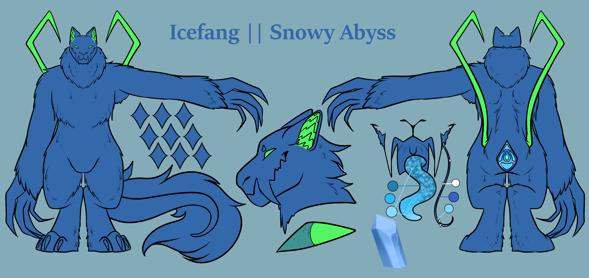
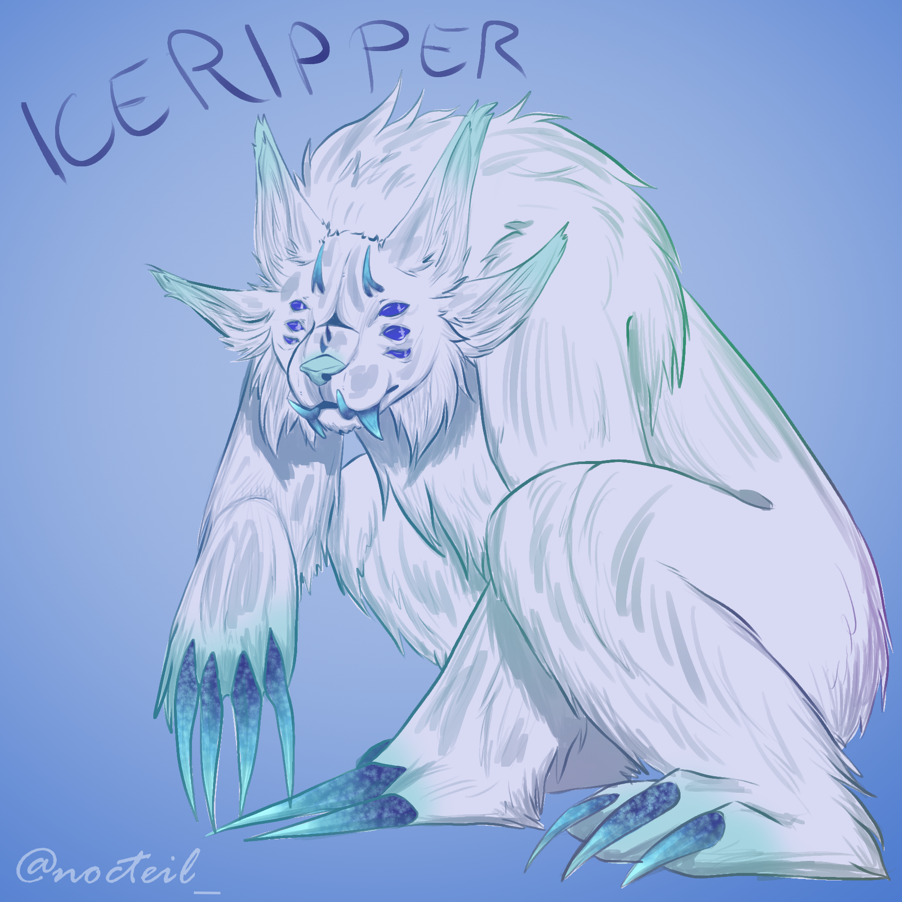

Icefang | Snowy Abyss
The Snowy Abyss is located in a deep icy cavern on top of the mountain region. The temperatures are constantly below freezing and oxygen is limited which allows barely any Life to sprout up there aside from the gigantic Pervivanimus. The Pervivanimus or short Perviva is a dark tree that is dead and spongy on the inside. The sap runing through the hollow sponge canals seems resistent to the harsh environment. On the outside it appears almost like charcoal in color but like stone in strength. The pine needles are like glass and dangerous for anyone underneath it. In the Snowy Abyss are no flat plateaus or areas to comfortably live on.
Surviving in the cold
The spongy inside of the Perviva is edible though not described as particularly tasty. The sprouts of the Perviva are also edible. A little sweeter in taste and very nutritious. Due to the cold most water sources are frozen. The only way the Icefangs can stay hydrated is through the food they consume. The sap of the Pervivanimus is high in electrolytes and water. It’s taste is best described as a very sour tasting pickle. Aside from the Perviva other critters can survive in the Snowy Abyss. A mouse like creature eating through the snow and ice, teeth strong as diamond to even carve into the bark of Pervivanimus trees. While difficult to catch their meat contains a high protein and fat content, perfect especially for the younglings. Some other bugs and critters are hidden within the snow, though not of value for an Icefangs diet.
Hidden within the snow
The Icefangs fur takes on a light blue-ish hue. Hidden within the snow and caves to stay safe from potential other clans or even other subspecies if they somehow survive the cold. Their coat ranging only in dull to pastel colors to not become a target. To preserve heat in the cold their body temperature is way lower than that of mammals, this also giving them a slower metabolism. They are only 3 to 4.5 feet tall (0.9 to 1.4m) to use less energy. Their eyes have a reflecting membrane as a sort of second eye lid. With this they protect their eyes from snow and winds as well as reflect the sun away to not get blinded by it. This is also protecting them in snow storms. Their fur is thick and stores heat efficiently due to being double coated. Only parts sticking out of the coat are their appendages and hands. The appendages are made out of chitin to be sturdy yet preserve flexibility. Their hands are made out of a reptile like skin. Scales covering them to give a textured surface for grip strength. Their hind paws are huge and fur covered helping them stay on top of the snow. Due to evolution deeming the upper appendages unused the Icefangs only possess lower appendages to help them stay secure on the ground.
A new life is born
A new Icefang is created within the caverns of the Snowy Abyss. The colorful Crystals glowing dimly will grow into the form of a youngling over decades. Once completed a crystal falls to the ground. Once a year on Astras the sun is standing right to shine through the crystals. Bundling the light to one specific point on the ground. If the crystalized youngling lays there, they will melt out of the crystal. Slowly being able to move in the light before it once again disappears for another year. The coat color of the youngling will depend on the color of their birth crystal. They are able to survive on their own since day one but usually try to quickly find a clan.
Clans in the Snowy Abyss
Here the Clans are generally small to keep predators away and to have it easier finding food for the others. The clan size is between 3 and a max of 10 members.

Design Guide
IceRipper
The predators of the Snowy Abyss
These are not open to make and will stay a closed part of Astras
Never Safe...
While it may seem that there is not much life in the Snowy Abyss, some creatures still make it their home. Some are a food source for Arachs. For some, Arachs are the food source. Meet the Ice Ripper. A massive ball of fur and claws. With it's size of 6 foot it towers over the small Icefang arachs. All you can do here is hide. But be quiet.. Their massive ears will hear even the smallest noise, the 6 eyes watching everything. Those claws are not for fun either.
How do they survive?
Their fur keeps them warm while they also have a pretty low body temperature. While they move rather slowly most of the time, once food is near they can be fast. They are omnivores but focus on the protein and fat rich meat of arachs when they can. They will also rip off the bark of the Pervivanimus tree to eat the spongy inside. Their thick coat will save them from the pine needle like glass, but it still is not a pleasant feeling to get hit by.
Intelligence
They are smart in their own ways. A mix of bears and cats. They know how to solve problems and complex puzzles, yet are not intelligent enough to build houses or live in proper clans like Arachs do. They are loners in most cases and will react aggressively towards each other and other creatures.
